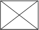

<ion-header>
    <ion-toolbar class="transparent-background-color">
        <ion-buttons slot="start">
            <ion-back-button></ion-back-button>
        </ion-buttons>
        <ion-fab-button color="light" style="float:right; padding: 8px;" (click)="presentModalDetalhesMomento()">
            <ion-icon name="ellipsis-vertical-outline"></ion-icon>
        </ion-fab-button>
    </ion-toolbar>
</ion-header>
<ion-tabs>
    <ion-tab-bar slot="bottom">
        <ion-tab-button tab="share">
            <ion-icon name="share-social-outline"></ion-icon>
            <ion-label>Partilhar</ion-label>
        </ion-tab-button>

        <ion-tab-button tab="getMoments">
            <ion-icon name="print-outline"></ion-icon>
            <ion-label>Adquirir momentos</ion-label>
        </ion-tab-button>

        <ion-tab-button tab="delete">
            <ion-icon name="trash-outline"></ion-icon>
            <ion-label>Apagar</ion-label>
        </ion-tab-button>
    </ion-tab-bar>
</ion-tabs>
<ion-content>
    

</ion-content>